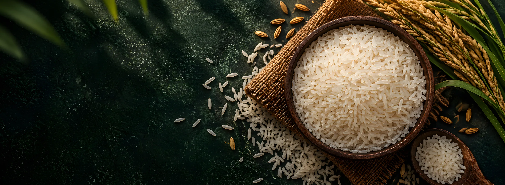
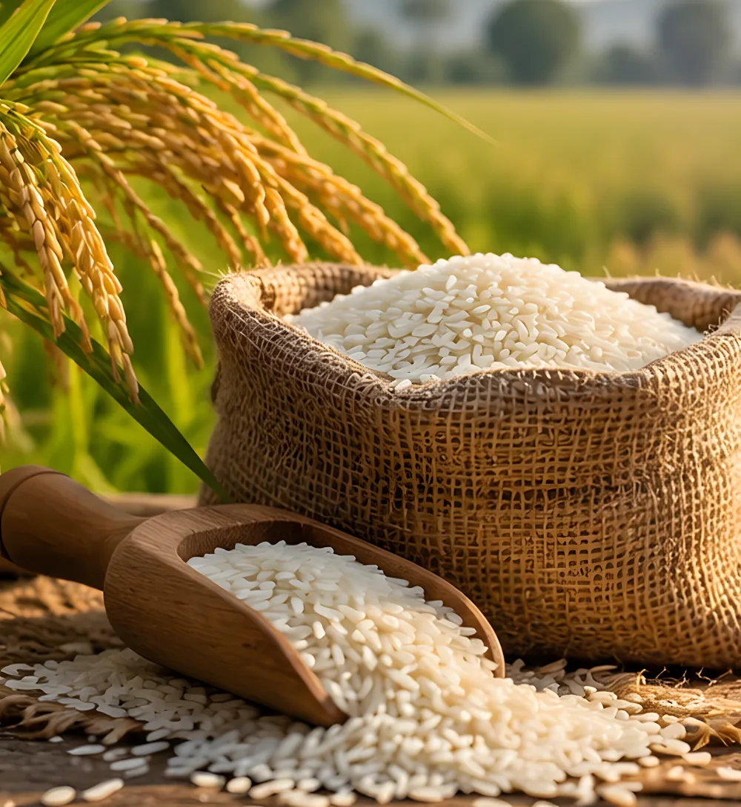
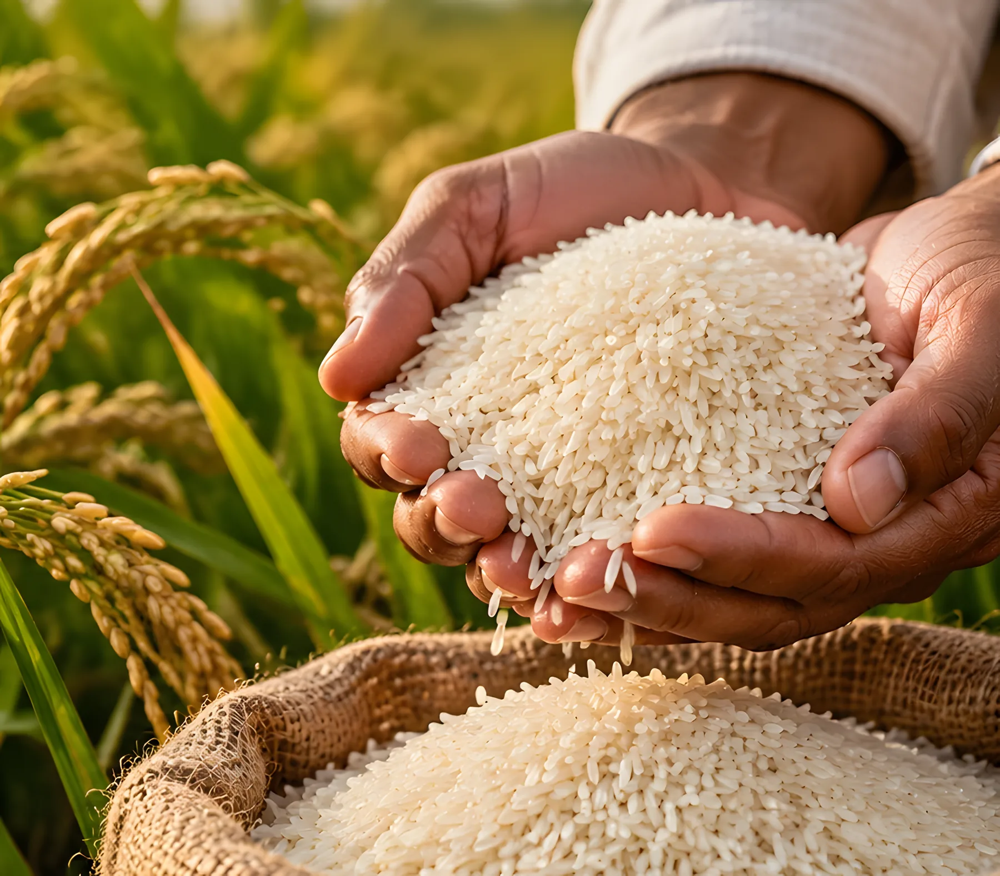

About Grainful
About Us
Grainful
At Grainful, our focus is to ensure that consumers across the globe get the best rice varieties available in the market.
Having been in the business for quite some time now, we are now recognized as leaders in the business of rice.

-
Our Vision
Our vision is simple: to be a producer of the finest quality of rice and be among the foremost suppliers to international markets.
Our goal is to expand and continuously improve the production and quality of rice that will be supplied to the markets.
-

Our Mission
The goal of our company is to offer high-quality rice products in addition to promoting the welfare of the farmers and the communities in which they operate.
We have a purpose to make the world better. We strive to do it with the proper approach to sourcing and fair business models. Constant focus on innovation and the quality aspect enhances our leadership in the rice export market.
About Us
It shows that our commitment to quality has helped to establish our company as one of the top suppliers of both Basmati and non-Basmati rice.
-

Our stock includes the best varieties of rice, ranging from 1121 Basmati to Pusa Basmati.
Every grain is purchased from the highest quality rice-producing area. This commitment to quality will make certain that each batch has a pleasant smell, a soft and airy texture, and golden long grains.
-

These varieties come from the most productive lands of India.
Whether the rice is required for consumption on a daily basis or on a festive occasion, we have products that fit the need. With Grainful customers find that they can enjoy superior quality rice that can be prepared in different ways to suit the consumer’s taste buds.
-

We incorporate modern technology in farming while embracing conventional practices of farming.
This means that every grain that is processed is GMO-free and rich in its natural nutritional value. From the fields to your kitchen, we make sure our rice meets the highest standards.
-

Some of our products are consumed by consumers from many countries all over the world.
Our customers trust us because we have maintained high-quality rice that is consistent with their expectations. Every shipment is a manifestation of our commitment to quality.
-

Experience the rich aroma, authentic taste, and golden goodness of Natural Wonder Ghee.
Perfect for everyday cooking, traditional Indian dishes, and adding a delicious finishing touch to your meals. From soft rotis to homemade sweets, bring a touch of richness and tradition to every bite.
Why Choose Natural Wonder Ghee?
- Rich, authentic flavour
- Delicious aroma and smooth texture
- Perfect for cooking, frying, and traditional sweets
- A versatile addition to your everyday meals
Natural Wonder Ghee – A Golden Touch to Every Meal.
Feeling hungry?
Savor Grainful
Why not try out Grainful and make your meal and heart joyful?
For ultimate culinary satisfaction, taste the difference of premium Grainful and enjoy the richness of the finest rice varieties.
Experience Grainful today!